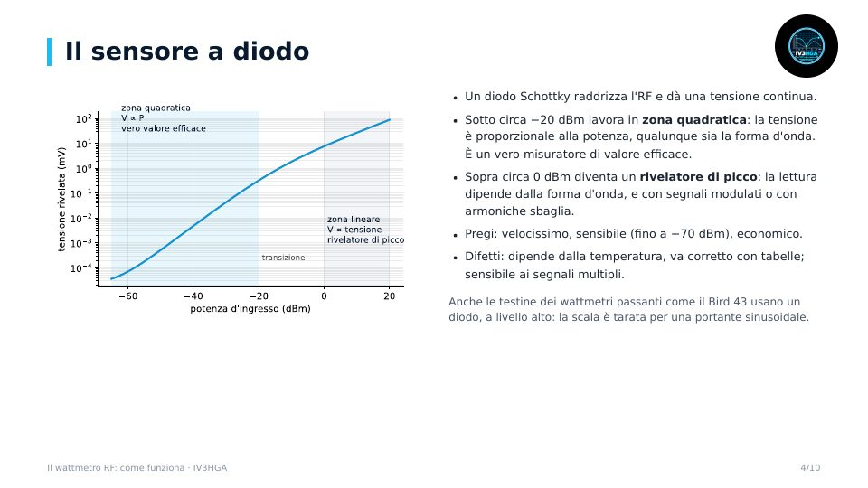

Capitolo 7 · Modulo 1
Il wattmetro RF: come funziona
- Che cosa vuol dire misurare la potenza in RF: P = V²/R, dBm e tensioni
- Wattmetri passanti (direzionali) e terminali (sensore + carico)
- Sensori a diodo, termocoppia, termistore, bolometro e calorimetro a confronto
- Potenza media, di picco e PEP, e le specifiche da leggere